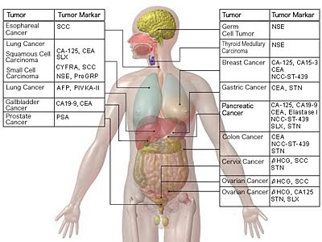

Онкологія (лікування раку)
Діагностика раку на ранніх стадіях може суттєво вплинути на рівень смертності від ракових захворювань. В умовах обмежених ресурсів, рак часто діагностується на пізніх стадіях, що призводить до низьких показників виліковування і більших
витрат на лікування.
Навіть у країнах з надійною та налагодженою системою охорони здоров'я, багато випадків ракових станів діагностується тоді, коли медикаментозне лікування вже не є ефективним. Саме тому проблеми пізньої діагностики та дороговартісного
лікування є настільки актуальними в наш час.
Впровадження стратегії ранньої діагностики раку є провідним питанням для громадського здоров’я, адже це суттєво підвищує ефективність лікування.
Дані рекомендації ВООЗ направлені на проведення ранньої діагностики раку та мають на меті допомогти політикам і керівникам програм покращити діагностику та забезпечити доступ до своєчасного лікування.
Онкологічні маркери
Онкологічні маркери – речовини, які продукують пухлинні клітини або організм у відповідь на розвиток пухлини. Від речовин, які продукують нормальні клітини, вони відрізняються якісно (пухлиноспецифічні) або кількісно (пухлиноасоційовані,
які також продукують непухлинні клітини, але в значно менших концентраціях).
ВООЗ рекомендує наступні інтервали взяття проб для аналізу:
- 1 раз на місяць протягом першого року після лікування, 1 раз на 2 місяці протягом другого року.
- 1 раз на 3 місяці протягом третього року – спостереження.
Необхідно зазначити, що найбільш важливим показником є динаміка змін, а не абсолютні показники концентрації.
Велику роль онкомаркери грають, після проведення протиракової терапії. Саме завдяки цьому аналізу можна контролювати процес лікування і своєчасно визначати ймовірність рецидиву.
Як правило, призначають такі аналізи тільки лікарі, хоча в будь-якій лабораторії можна здати скринінг самостійно.

Рекомендації
Для виключення факторів, які можуть впливати на результати дослідження, необхідно дотримуватися наступних правил підготовки:
- важливою умовою для лабораторних досліджень є здача крові натщесерце — 6 -12 годинний період голодування.
- в день дослідження допустимо вживання невеликої кількості води.
- за 6 — 12 годин до дослідження слід виключити прийом алкоголю, куріння, прийом їжі, обмежити фізичну активність.
- виключити прийом ліків, якщо відмінити прийом ліків неможливо, необхідно проінформувати про це лабораторію.
- дітей до 5 років, перед здачею крові, бажано поїти кип’яченою водою (порціями до 150–200 мл., протягом 30 хвилин).
- для грудних дітей — перед здачею крові витримати максимально можливу паузу між годуваннями.
Онкологічна панель
Альфа-фетопротеїн
Маркер гепатоцеллюлярної карциноми, метастазів новоутворень іншої локалізації та геміногенних пухлин.
Матеріал: венозна кров.
Аналізатор: Architect (Abbot Diagnostics).
Онкомаркерний білок S-100
Маркер пошкодження мозку (висока негативна прогностична значимість). Маркер злоякісної меланоми.
Матеріал: венозна кров.
Аналізатор: Cobas 6000, Roche Diagnostics.
β2-міоглобулін
Маркер лімфопроліферативних захворювань (множинна мієлома, В-лімфома, хвороба Вальденстрема, неходжкінська лімфома), прогноз і ефективність лікування мієлобластного захворювання, лімфолейкозу.
Матеріал: венозна кров.
Аналізатор: Cobas 6000.
Маркер кісткової резорбції
Маркер метаболізму кісткової тканини, маркер новоутворень метастазів кісток, раку молочної залози,а також маркер наявності множинної меланомиу кістках.
Матеріал: венозна кров.
Аналізатор:IDS-Deutschland GmbH.